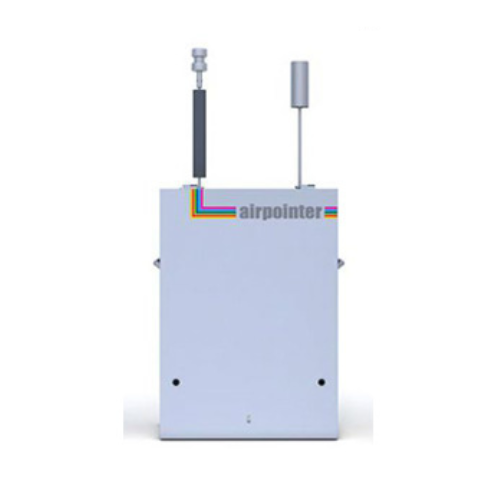

At Agua Instruments, we offer cutting-edge AAQMS designed to provide precise and real-time Continuous Ambient Air Quality Monitoring. Our advanced AAQMS Sensors deliver accurate data to help maintain and improve air quality, ensuring compliance with environmental regulations and enhancing public health. With our innovative technology, we support both urban and industrial applications, offering reliable solutions for air quality management.
Our systems use state-of-the-art sensors and technology for precise air quality measurements.
We offer tailored Urban AAQMS Solutions and Industrial AAQMS to meet the specific needs of various environments.
From installation to maintenance, our team provides full support to ensure effective operation.
Our solutions are competitively priced, ensuring the best value without compromising on quality.
We are dedicated to supporting environmental protection by providing reliable air quality monitoring solutions.
Monitor pollution levels in cities to protect public health and inform policy decisions.
Ensure regulatory compliance and protect workers' health by monitoring emissions from factories and plants.
Assess air quality impacts from construction activities and implement mitigation measures.
Provide data for public health initiatives to reduce exposure to harmful pollutants.
Monitor air quality around airports, ports, and major highways to manage pollution from transportation.
